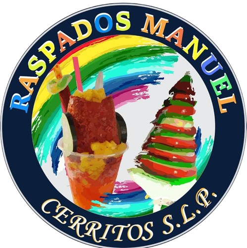
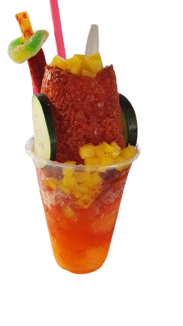
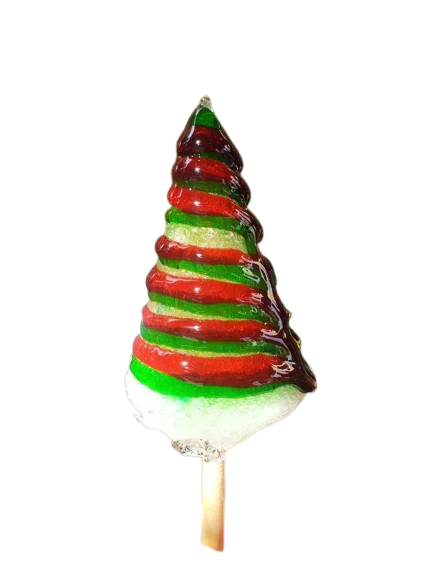

|
RASPADOS MANUEL |
|---|---|
Los raspados más famosos de Cerritos, buscando darte tus momentos de relajación y alegrar tu día con un raspado frío y dulce. |
El raspado más famoso que manejamos, una mezcla de picante y dulce creando una nueva frescura y sabor increíble.
El raspado más colorido y dulce, preferido por los niños por su dulzura y colores parecidos a los de un caramelo.
